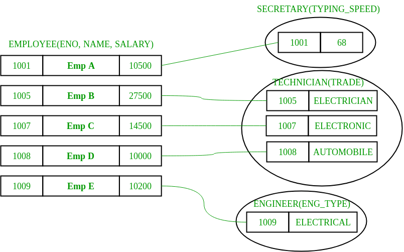
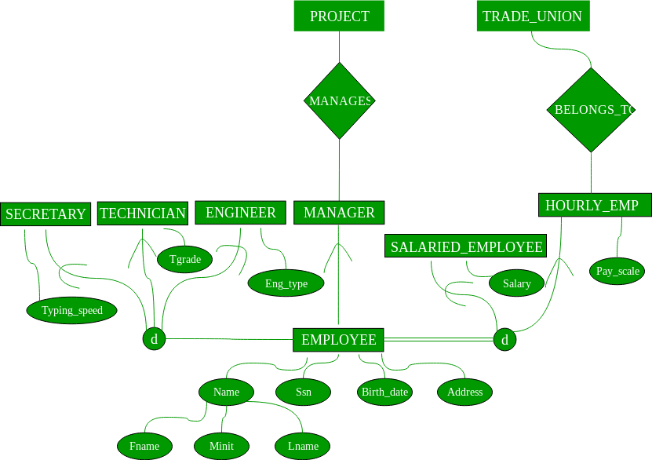
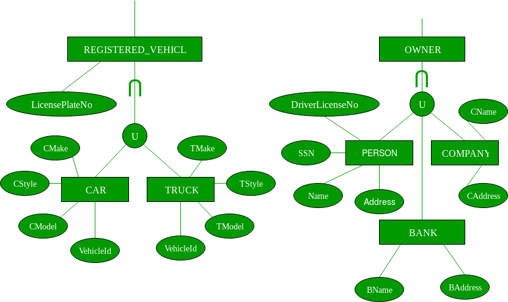

Prerequisite – Introduction of ER Model
Enhanced entity-relationship diagrams are advanced database diagrams very similar to regular ER diagrams which represents requirements and complexities of complex databases.
It is a diagrammatic technique for displaying the Sub Class and Super Class; Specialization and Generalization; Union or Category; Aggregation etc.
Generalization and Specialization –
These are very common relationship found in real entities. However this kind of relationships was added later as enhanced extension to classical ER model. Specialized class are often called as subclass while generalized class are called superclass, probably inspired by object oriented programming. A sub-class is best understood by “IS-A analysis”. Following statements hopefully makes some sense to your mind “Technician IS-A Employee”, “Laptop IS-A Computer”.
An entity is specialized type/class of other entity. For example, Technician is special Employee in a university system Faculty is special class of Employee. We call this phenomenon as generalization/specialization. In the example here Employee is generalized entity class while Technician and Faculty are specialized class of Employee.
Example – This example instance of “sub-class” relationships. Here we have four sets employee: Secretary, Technician, and Engineer. Employee is super-class of rest three set of individual sub-class is subset of Employee set.

- An entity belonging to a sub-class is related with some super-class entity. For instance emp no 1001 is a secretary, and his typing speed is 68. Emp no 1009 is engineer (sub-class) and her trade is “Electrical”, so forth.
- Sub-class entity “inherits” all attributes of super-class; for example employee 1001 will have attributes eno, name, salary, and typing speed.
Enhanced ER model of above example –

Constraints – There are two types of constraints on “Sub-class” relationship.
- Total or Partial – A sub-classing relationship is total if every super-class entity is to be associated with some sub-class entity, otherwise partial. Sub-class “job type based employee category” is partial sub-classing – not necessary every employee is one of (secretary, engineer, and technician), i.e. union of these three types is proper subset of all employees. Whereas other sub-classing “Salaried Employee AND Hourly Employee” is total; union of entities from sub-classes is equal to total employee set, i.e. every employee necessarily has to be one of them.
- Overlapped or Disjoint – If an entity from super-set can be related (can occur) in multiple sub-class sets, then it is overlapped sub-classing, otherwise disjoint. Both the examples: job-type based and salaries/hourly employee sub-classing are disjoint.
Note – These constraints are independent of each other: can be “overlapped and total or partial” or “disjoint and total or partial”. Also sub-classing has transitive property.
Multiple Inheritance (sub-class of multiple super classes) –
An entity can be sub-class of multiple entity types; such entities are sub-class of multiple entities and have multiple super-classes; Teaching Assistant can subclass of Employee and Student both. A faculty in a university system can be sub-class of Employee and Alumnus both. In multiple inheritance, attributes of sub-class is union of attributes of all super-classes.
Union –
- Set of Libray Members is UNION of Faculty, Student, and Staff. A union relationship indicates either of type; for example: a library member is either Faculty or Staff or Student.
- Below are two examples shows how UNION can be depicted in ERD – Vehicle Owner is UNION of PERSON and Company, and RTO Registered Vehicle is UNION of Car and Truck.

You might see some confusion in Sub-class and UNION; consider example in above figure Vehicle is super-class of CAR and Truck; this is very much the correct example of subclass as well but here use it different we are saying RTO Registered vehicle is UNION of Car and Vehicle, they do not inherit any attribute of Vehicle, attributes of car and truck are altogether independent set, where is in sub-classing situation car and truck would be inheriting the attribute of vehicle class. Below is Vehicle as modeled as class of Car and Truck.
References –
comet.lehman.cuny.edu
cs.toronto.edu